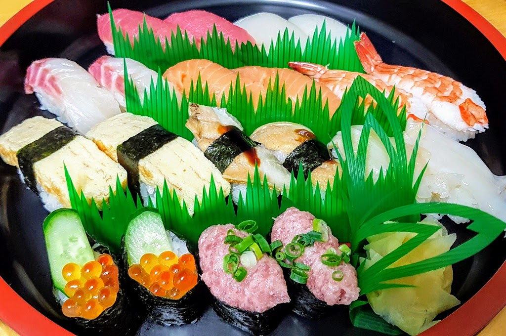

Crispy Tempura – Light & Golden Perfection
Tempura showcases Japan’s mastery of frying techniques. The batter is light, airy, and perfectly crisp without feeling heavy, allowing the natural flavor of each ingredient to shine through.
From golden shrimp to delicate seasonal vegetables, tempura offers a satisfying crunch paired with elegant simplicity—making it a beloved staple in Japanese cuisine.
The Secret Behind the Batter
Tempura batter is known for its delicate texture. Made with cold water, flour, and sometimes egg, it is mixed lightly to avoid gluten development.
This minimal mixing technique creates the airy coating that defines authentic tempura.
Choosing the Right Ingredients
Classic tempura includes shrimp, squid, sweet potato, eggplant, and pumpkin. Seasonal vegetables are also widely used.
Freshness is key, as the light batter enhances rather than masks the ingredient’s natural taste.

Perfect Frying Technique
Ingredients are dipped into cold batter and fried quickly in hot oil. The rapid cooking locks in moisture while creating a crisp exterior.
Maintaining consistent oil temperature ensures even color and texture.
Traditional Dipping Sauce
Tempura is commonly served with tentsuyu—a light dipping sauce made from dashi, soy sauce, and mirin.
Grated daikon radish is often added to enhance freshness and balance the fried texture.
Serving & Pairing Ideas
- Serve with steamed white rice
- Pair with soba or udon noodles
- Add matcha salt for a modern twist
- Enjoy with green tea
- Include pickled vegetables as a side
Tips for Homemade Tempura
Keep batter cold and oil hot for the crispiest results. Avoid overcrowding the pan to maintain temperature stability.
Serve immediately after frying to enjoy tempura at its peak crunch.
Golden Crunch, Japanese Elegance
Crispy tempura is a beautiful example of Japanese culinary precision— simple ingredients transformed through expert technique.
Light, golden, and irresistibly crunchy, tempura brings restaurant- quality texture and flavor straight to your home kitchen.